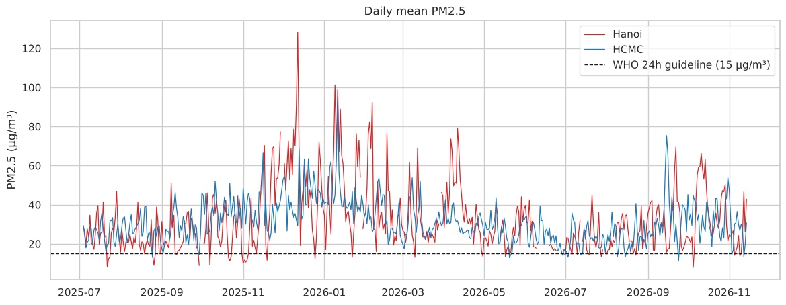
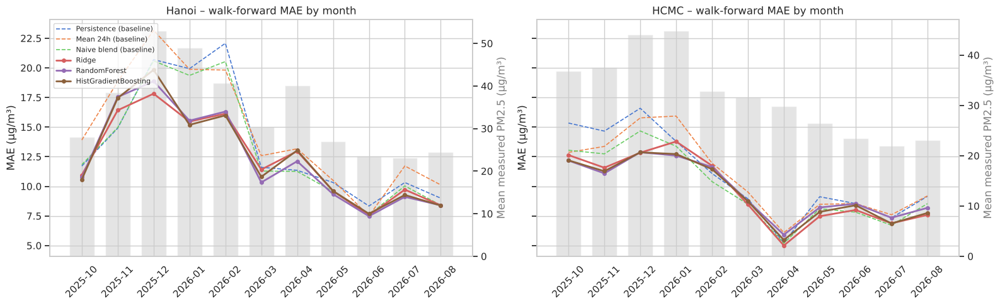
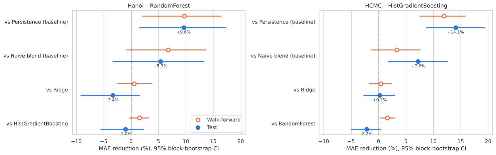

Kết quả trên tập Test
Test là 01/09 – 13/11/2026, dùng đúng một lần; mô hình được chọn trước đó bằng walk-forward. Chỉ chấm trên giá trị PM2.5 đo thật. CI 95% bằng block bootstrap.
- Hà Nội · MAE
- 10,91 µg/m³Naive blend 11,53 → giảm 5,3%, CI [−3,4%; +13,3%]: chưa có ý nghĩa
- TP.HCM · MAE
- 11,07 µg/m³Naive blend 11,93 → giảm 7,2%, CI [+1,7%; +12,6%]: có ý nghĩa
- So với Persistence
- −9,6% / −14,1%cả hai có ý nghĩa thống kê
- Đúng dải nồng độ EPA
- 59,3% / 60,5%96,7% / 96,8% lệch tối đa 1 dải
Sản phẩm nộp
- Notebook Google Colab ↗ Bản đã chạy trên GitHub ↗ Chạy được Run all; dữ liệu tự tải từ GitHub nếu không có sẵn.
- Báo cáo PDF Tải báo cáo PDF ↗ Mọi con số được đọc tự động từ notebook đã chạy.
- Video trình bày Chưa cập nhật 5–10 phút, YouTube Public hoặc Unlisted.
Nội dung
Mô tả dữ liệu & EDA
Mỗi thành phố một trạm quan trắc, ghép với thời tiết cùng giờ tại toạ độ của trạm trên một lưới giờ đầy đủ; giờ không có số đo để trống (NaN).
| PM2.5 Hà Nội | OpenAQ v3, trạm Công viên Nhân Chính – Khuất Duy Tiến (trạm chuẩn của mạng quan trắc Hà Nội). Thiếu 3,6% số giờ; tháng tệ nhất là 06/2026 (thiếu 28%) |
|---|---|
| PM2.5 TP.HCM | OpenAQ v3, trạm CMT8 (cảm biến giá rẻ AirGradient, trạm duy nhất ở TP.HCM có dữ liệu liên tục). Thiếu 0,6% |
| Chọn trạm | Chấm mọi trạm OpenAQ trong bán kính 25 km theo tỉ lệ giờ có số đo và theo giờ trong ngày bị thiếu nhiều nhất. Nhân Chính đo 96,4% số giờ (giờ tệ nhất 95,0%). Trạm cũ 46 Lưu Quang Vũ chỉ đo 51,0%, giờ tệ nhất 27,9%: thiếu dồn vào một số giờ, tức thiếu không ngẫu nhiên, nên bị loại |
| Thời tiết | Open-Meteo Historical Weather: nhiệt độ, độ ẩm, mưa, tốc độ và hướng gió, áp suất, mây. Không thiếu giờ nào |
| Ngưỡng WHO | 15 µg/m³ là ngưỡng cho trung bình 24 giờ, nên so với trung bình ngày (ngày có ≥ 18 giờ đo): vượt ngưỡng ở 92,2% số ngày hợp lệ tại Hà Nội và 97,6% tại TP.HCM |
| Tự tương quan | 0,95 / 0,88 ở độ trễ 1 giờ nhưng chỉ 0,59 / 0,47 ở độ trễ 24 giờ: dự báo trước một ngày khó hơn nhiều so với dự báo giờ kế tiếp |



Chuẩn bị dữ liệu
Nguyên tắc xuyên suốt: mọi đặc trưng tại giờ t chỉ được dùng dữ liệu có đến giờ t.
| Bước | Cách làm | Lý do |
|---|---|---|
| Giá trị sai | PM2.5 ≤ 0 hoặc > 1000 µg/m³, hoặc lặp y hệt ≥ 6 giờ, đặt thành NaN | Lỗi cảm biến (giai đoạn này không có giá trị nào như vậy) |
| Giá trị thiếu | Đặc trưng: forward-fill tối đa 6 giờ. Target: chỉ giá trị đo thật | Nội suy hai phía dùng số đo sau khoảng trống, tức nhìn trước tương lai |
| Ngoại lai | Giữ trong target; chỉ cắt (clip) đặc trưng PM2.5 bằng IQRClipper với k = 3, ngưỡng học trên dữ liệu train | Đỉnh ô nhiễm là sự kiện thật; bỏ đi sẽ làm kết quả đẹp giả |
| Đặc trưng | 23 cột: độ trễ và thống kê trượt của PM2.5, thời tiết, giờ dạng sin/cos; mùa, thứ trong tuần, hướng gió 8 hướng (one-hot) | Giờ và mùa tính tại thời điểm t + 24h, biết trước nên không rò rỉ |
| Chia tập | Cùng ngày cho hai thành phố. Test: từ 01/09/2026. Development: trước đó, bỏ 24h đệm | Target 24h của Development đã đo xong trước khi có dự báo Test đầu tiên |
| Walk-forward | Mỗi tháng 10/2025 – 08/2026: train lại trên mọi thứ đã biết trước tháng đó, dự báo cả tháng | Chỉ có một mùa đông; một tập Validation cố định chỉ rơi vào một mùa, còn walk-forward chấm cả mùa đông |

Mô hình hoá & walk-forward
Ba baseline ngây thơ và ba mô hình Scikit-learn. Siêu tham số chọn bằng GridSearchCV với TimeSeriesSplit(n_splits=3, gap=24) trên Development, tiêu chí MAE; mô hình tốt nhất chọn theo MAE walk-forward gộp 11 tháng.
| Mô hình (walk-forward, 11 tháng) | MAE Hà Nội | MAE TP.HCM | R² Hà Nội | R² TP.HCM |
|---|---|---|---|---|
| Persistence: ŷ = PM2.5(t) | 13,788 | 10,895 | 0,183 | −0,030 |
| Trung bình 24h | 14,836 | 10,850 | 0,127 | 0,130 |
| Naive blend: w·hiện tại + (1−w)·TB 24h | 13,358 | 9,921 | 0,247 | 0,208 |
| Ridge | 12,521 | 9,630 | 0,383 | 0,299 |
| RandomForest | 12,453 | 9,751 | 0,354 | 0,280 |
| HistGradientBoosting | 12,646 | 9,593 | 0,334 | 0,304 |


Đánh giá & phân tích lỗi
Mỗi mô hình được train lại trên toàn bộ Development rồi đánh giá một lần trên Test (01/09 – 13/11/2026).





Kết luận
- So với Persistence: học máy tốt hơn một cách có ý nghĩa ở cả hai thành phố, trên cả walk-forward và Test.
- So với Naive blend: chỉ giảm MAE khoảng 5–7% trên Test; có ý nghĩa ở TP.HCM, chưa có ý nghĩa ở Hà Nội. Không xác định được mô hình học máy nào tốt nhất.
- Theo mùa: lợi thế của học máy tập trung ở đỉnh mùa đông; ở các tháng chuyển mùa, học máy phản ứng chậm và có thể thua dự báo ngây thơ.
- Hạn chế: chỉ một mùa đông (trạm Nhân Chính bắt đầu 07/2025), Test là đầu mùa ô nhiễm; mỗi thành phố một trạm, TP.HCM là cảm biến giá rẻ; siêu tham số tune trên Development; mô hình dự báo thấp các giờ ô nhiễm nặng.
- Hướng phát triển: chạy lại walk-forward sau mùa đông thứ hai; dùng dự báo thời tiết cho t + 24h; thêm trạm đo; hồi quy phân vị hoặc bộ phân loại vượt ngưỡng để cảnh báo sớm.